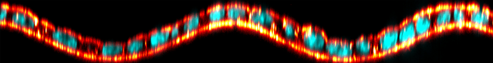

Nicolas Harmand
Chercheur en physique du vivant Researcher in Physics of Living Systems
Laboratoire Jean Perrin — Sorbonne Université / CNRS, Paris
J'utilise les concepts de la physique et de la physico-chimie de la matière molle pour comprendre le vivant. Mon approche repose sur la conception d'expériences hautement contrôlées pour éprouver les modèles existants ou co-construits avec des théoriciens (notamment mécaniques), afin d'en tester les limites de validité ou d'en dégager de nouveaux principes fondamentaux.
Ingénieur ESPCI de formation et docteur en biophysique, après un passage par la R&D industrielle (Saint-Gobain), je travaille aujourd'hui au Laboratoire Jean Perrin. Mes travaux actuels s'appuient sur des approches expérimentales (notamment des gouttes senseurs de force) et de la modélisation pour explorer la physique de la morphogenèse.
I apply the concepts of soft matter physics and physical chemistry to understand living systems. My approach relies on designing highly controlled experiments to challenge existing physical models, or models co-developed with theorists (particularly mechanical models), in order to test their limits of validity or uncover new fundamental mechanisms.
With a background as an ESPCI engineer and a PhD in biophysics, followed by a period in industrial R&D (Saint-Gobain), I now work at the Laboratoire Jean Perrin. My current work combines experimental approaches (specifically force-sensing droplets) and modeling to explore the physics of morphogenesis.
Axes de Recherche principaux Main Research Areas
Microrhéométrie & Forces tissulaires Microrheometry & Tissue Forces
Développement de techniques de microrhéométrie in situ lors de l'embryogenèse (utilisation de gouttes ferrofluides) pour sonder les propriétés mécaniques de la matrice extracellulaire.
Development of in situ microrheometry techniques during embryogenesis (using ferrofluid droplets) to probe the mechanical properties of the extracellular matrix.
Mécanique des tissus épithéliaux Epithelial Tissue Mechanics
Étude de la forme 3D et de l'épaisseur des cellules épithéliales sur des substrats courbes. Modélisation quantitative via les notions de tensions de surface et de ligne.
Study of the 3D shape and thickness of epithelial cells on curved substrates. Quantitative modeling through surface and line tension concepts.
Vision Scientifique & Projet Scientific Vision & Project
Comment l'hétérogénéité cellulaire et la mécanique tissulaire s'influencent-elles mutuellement ? How do cellular heterogeneity and tissue mechanics mutually influence each other?
Les tissus biologiques sont des matériaux actifs et hétérogènes. Que ce soit au cours de l'embryogenèse ou de la progression tumorale, la manière dont les propriétés mécaniques (déformations, écoulements) et les hétérogénéités cellulaires (adhésion, contractilité) rétroagissent reste largement incomprise.
Biological tissues are active and heterogeneous materials. Whether during embryogenesis or tumor progression, the way mechanical properties (deformations, flows) and cellular heterogeneities (adhesion, contractility) feedback on each other remains largely misunderstood.
Hétérogénéité Cellulaire Cellular Heterogeneity
Rhéologie Tissulaire Tissue Rheology
1. Fondations Rhéologiques 1. Rheological Foundations
Développement d'un cadre expérimental modèle-agnostique pour relier déformations tissulaires globales et réarrangements topologiques locaux.
Development of a model-agnostic experimental framework linking global tissue deformations to local topological rearrangements.
2. Ségrégation Cellulaire 2. Cell Segregation
Étude de la dynamique d'écoulement de deux populations cellulaires distinctes (optogénétique, mutants d'adhésion).
Study of the flow dynamics of two distinct cellular populations (optogenetics, adhesion mutants).
Publications & Brevets Publications & Patents
Articles dans des revues internationales à comité de lecture (RICL) Articles in peer-reviewed international journals
Design and optimization of in situ self-functionalizing stress sensors
The European Physical Journal E, 49, 12, 2026.

Thickness of epithelia on wavy substrates: measurements and continuous models
The European Physical Journal E, 45 (6), 53, 2022.
Journal Cover
3D shape of epithelial cells on curved substrates
Physical Review X, 11 (3), 031028, 2021.
PRX's Highlights
Brevets internationaux International Patents
Print Head for a System for Three-Dimensional Printing of Material
Brevet International — WO 2024/256462 A1
International Patent — WO 2024/256462 A1
3D Printing System With Bypass
Brevet Européen — EP 4477374 A1
European Patent — EP 4477374 A1
Control of 3D Printing
Brevet International — WO 2023/025857 A1
International Patent — WO 2023/025857 A1
Conférences (Sélection) Selected Conferences
- GDR Approche Quantitative du Vivant (2026) — Communication Orale Oral Presentation
- Workshop Biomechanics from cells to tissues (2019) — Communication Orale (Invité) Oral Presentation (Invited)
- GDR CellTiss : de la Cellule au Tissu (2019) — Communication Orale Oral Presentation
- Symposium "Actomyosine et adhésion" (2018) — Communication Orale (Invité) Oral Presentation (Invited)
Réseau, Rayonnement & Intégration Network, Outreach & Integration
Collaborations & Réseau Scientifique Collaborations & Scientific Network
- Théorie & Modélisation : R. Voituriez (LJP), J. O'Byrne (LJP), Y.-E. Keta (PMMH), P. Marcq (PMMH).
- Biophysique Expérimentale : L.-L. Pontani (LJP), O. du Roure & J. Heuvingh (PMMH), D. Talbot (PHENIX).
- Biologie Cellulaire & Développement : I. Bonnet (Inst. Curie), W. Xiao, M. Bréau & C. Currantz (Dev2A).
- Expérience Industrielle (Saint-Gobain R&D) : 3.5 années en recherche appliquée ayant conduit au dépôt de 3 brevets internationaux, forgeant une approche de la recherche ancrée dans la robustesse expérimentale.
- Theory & Modeling: R. Voituriez (LJP), J. O'Byrne (LJP), Y.-E. Keta (PMMH), P. Marcq (PMMH).
- Experimental Biophysics: L.-L. Pontani (LJP), O. du Roure & J. Heuvingh (PMMH), D. Talbot (PHENIX).
- Cellular & Developmental Biology: I. Bonnet (Inst. Curie), W. Xiao, M. Bréau & C. Currantz (Dev2A).
- Industrial Experience (Saint-Gobain R&D): 3.5 years in applied research leading to 3 international patents, forging a research approach rooted in experimental robustness.
Service, Mentorat & Financements Service, Mentoring & Funding
- Financements & Prix : Projet interlaboratoire IBPS (2026, 20k€), Lauréat "La preuve par l'image" (CNRS, 2019), "Beautiful Science" (SFP, 2019).
- Service à la communauté : Reviewer scientifique (iScience, Cell Press), Co-organisateur du symposium Dynamics of extra-cellular matrix (2024).
- Enseignement & Mentorat : Co-encadrement de 9 étudiants (du M1 au Doctorat). 12h de Cours Magistral (Master, 2025-2026), 91h de TP (ESPCI).
- Science Ouverte : Rédaction de la page Wikipédia francophone de référence pour les Cellules MDCK.
- Funding & Awards: IBPS inter-laboratory project (2026, €20k), Winner "La preuve par l'image" (CNRS, 2019), "Beautiful Science" (SFP, 2019).
- Community Service: Scientific reviewer (iScience, Cell Press), Co-organizer of the Dynamics of extra-cellular matrix symposium (2024).
- Teaching & Mentoring: Co-mentoring of 9 students (from M1 to PhD). 12h of Master's Lectures (2025-2026), 91h of practicals (ESPCI).
- Open Science: Redacted the reference French Wikipedia page for MDCK cells.
Parcours Journey
Post-doctorant Postdoctoral Researcher
Sorbonne Université (Laboratoire Jean Perrin) — Paris
Recherche sur la microrhéométrie de la matrice extracellulaire pendant l'embryogenèse.
Research on microrheometry of the extracellular matrix during embryogenesis.
Ingénieur de recherche R&D Research Engineer
Saint-Gobain Recherche Paris — Aubervilliers
Recherche appliquée en physique des procédés industriels (3 brevets déposés).
Applied research in industrial process physics (3 patents filed).
Doctorat & Post-doctorat de transition PhD & Transition Postdoc
Université Paris Diderot / Laboratoire MSC — Paris
Soutenance d'une thèse en biophysique sur la mécanique et la forme des cellules épithéliales.
PhD thesis in biophysics on the mechanics and shape of epithelial cells.
Stage de recherche Research Internship
Stanford University (Prakash Lab) — USA
Observation et modélisation de défauts topologiques dans les colonies bactériennes actives (4 mois).
Observation and modeling of topological defects in active bacterial colonies (4 months).
Diplôme d'Ingénieur & Master 2 ICFP Engineering Degree & M2 ICFP
ESPCI Paris / Sorbonne Université — Paris
Formation pluridisciplinaire en physique, chimie et biologie. Majeure en physique.
Multidisciplinary training in physics, chemistry, and biology. Physics major.
Sélection de distinctions : Selected Distinctions:
Contact
N'hésitez pas à me contacter pour toute question scientifique, collaboration ou échange concernant mes travaux.
Feel free to contact me for any scientific questions, collaborations, or inquiries regarding my research.